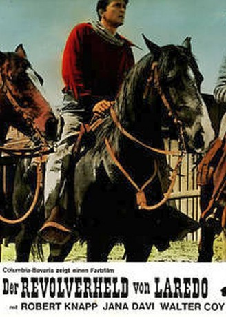
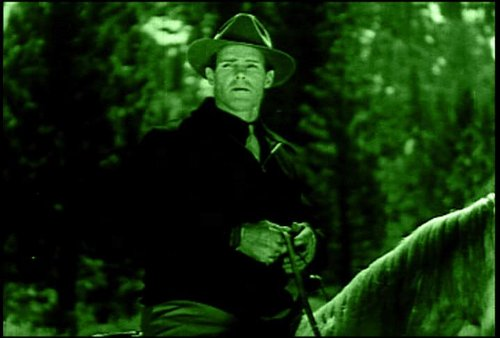
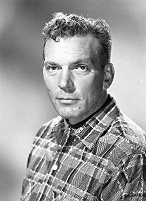
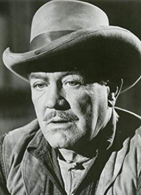
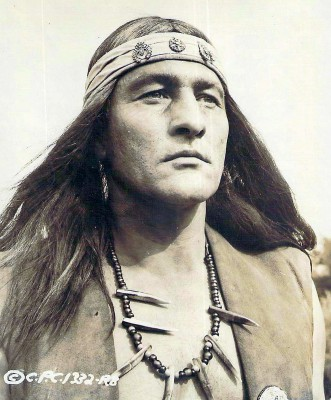
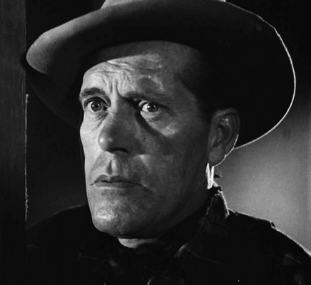
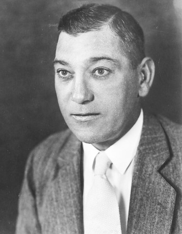
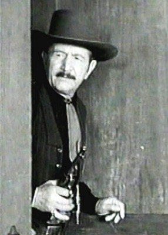

#3105 Der Revolverheld von Laredo
Alternativ: Gunmen from Laredo
 
 IMDB-Wertung: 4.7 / 10
IMDB-Wertung: 4.7 / 10  Metascore: 0
Metascore: 0 
Die berüchtigten Keefer-Brüder überfallen den Rancher Gil Reardon und erschießen seine Frau. Reardon verfolgt die drei Banditen. Im Saloon von Laredo erschießt er einen der Gangster. Vom Sheriff gejagt, macht er sich auf die Suche nach den beiden anderen Mördern.
Jahr: 1959
Dauer: 64 Minuten
FSK: 6
Land: USA Studio: Columbia PicturesTonspuren: DD2.0 - ,
Untertitel:
Auflösung: 1080p (1920x1080) Größe: 5765 MB
Genre: Western
Regisseur: Wallace MacDonald
Drehbuch: Clarke Reynolds
Soundtrack:
Darsteller:
-  Kermit Maynard als Courtroom Deputy , uncredited
- Hank Patterson als Stableman , uncredited
 Dan White als Jury Foreman , uncredited
Dan White als Jury Foreman , uncredited- Robert Knapp als Gil Reardon
- Maureen Hingert als Rosita
-  Walter Coy als Ben Keefer
-  Paul Birch als Marshal Matt Crawford
- Don C. Harvey als Deputy Dave
- Clarence Straight als Deputy Frank Ross
- Jered Barclay als Jordan Keefer
- Ron Hayes als Walt Keefer
-  Charles Horvath als Coloradas
- Jean Moorhead als Katy Reardon
- Harry Antrim als Judge Frank Parker , uncredited
- Don Blackman als Smoky , uncredited
-  Chet Brandenburg als Trial Spectator , uncredited
- X Brands als Delgados , uncredited
- Joseph Breen als Walker , uncredited
- John L. Cason als Bob Sutton , uncredited
-  Heinie Conklin als Trial Spectator , uncredited
- Martin Garralaga als Jaro , uncredited
 Herman Hack als Bartender , uncredited
Herman Hack als Bartender , uncredited- Bill Hale als Dodge , uncredited
- Gil Perkins als Prisoner , uncredited
- Cap Somers als Trial Spectator , uncredited
- Larry Thor als Captain Garrick , uncredited
-  Jack Tornek als Trial Spectator , uncredited
Datei: X:\HD-Western-1900-1959\Revolverheld von Laredo, Der (1959, FSK6, 1920x1080).mkv seit 28.01.2016
Festplatte: HD Eastern+Western
 Es gibt insgesamt 98 Filme in der Gruppe 'HD-Western-1900-1959'
Es gibt insgesamt 98 Filme in der Gruppe 'HD-Western-1900-1959'